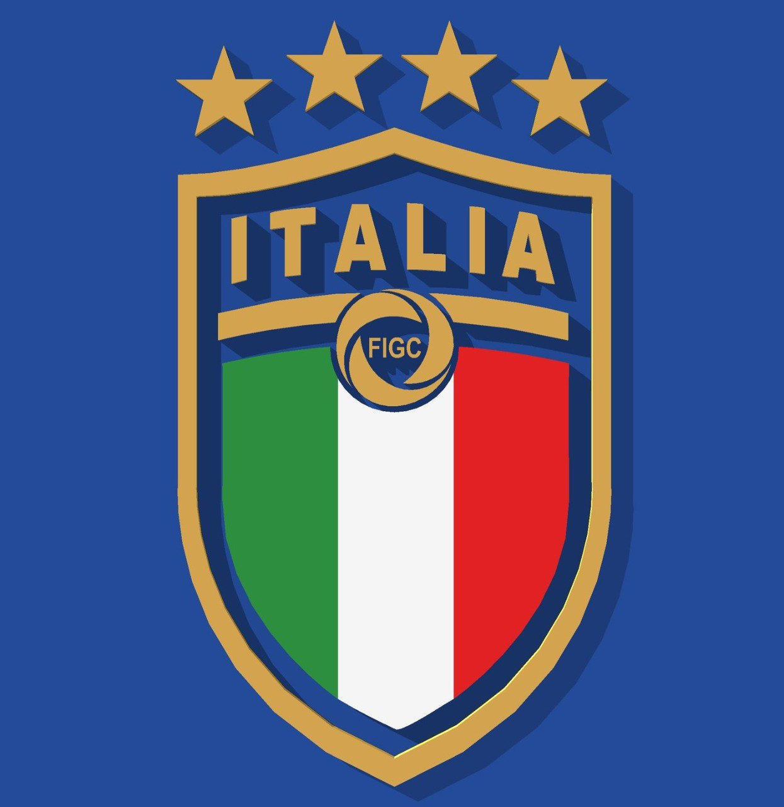
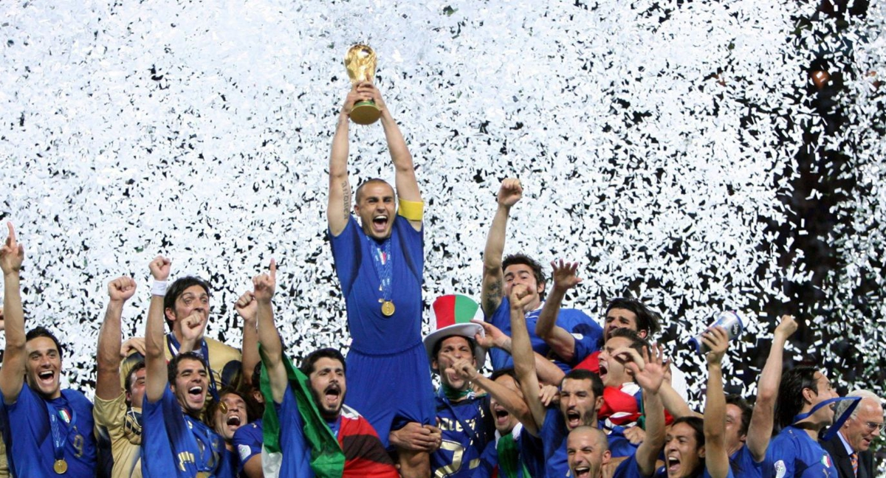
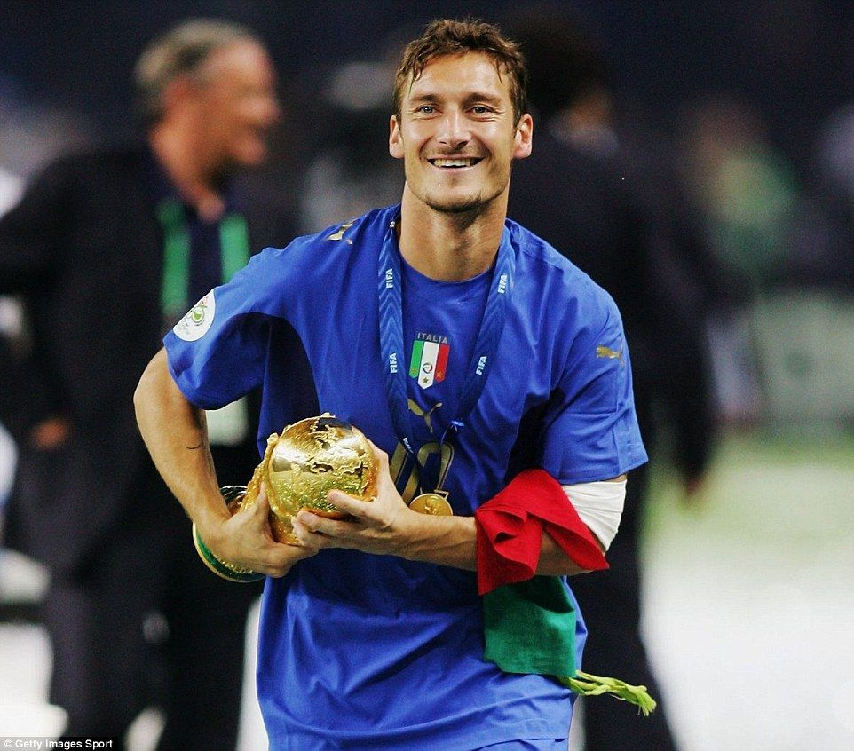
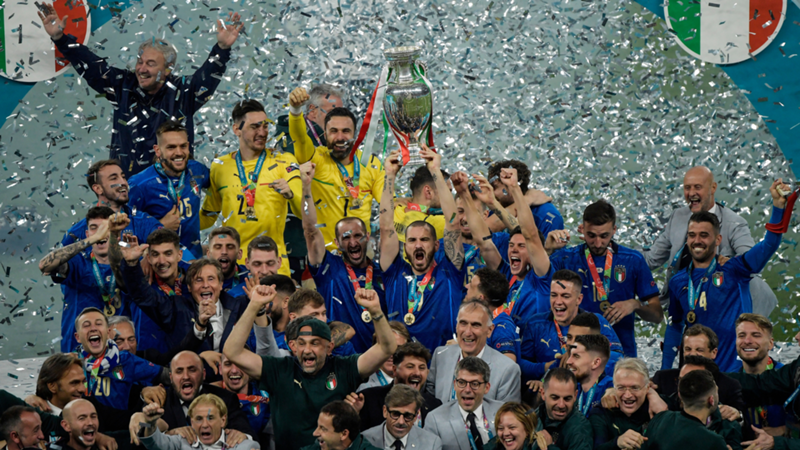

🇮🇹Selección Italiana 🇮🇹
Inicio
información
Descripción

🇮🇹⚽Historia de la Selección⚽🇮🇹
↓Mas información aqui abajo↓
Ver mas

🏆¿Cuantas Copas del Mundo tienen?🏆
↓Mas información aqui abajo↓
Ver mas

🇮🇹⚽Los Mejores Jugadores de la Selección⚽🇮🇹
↓Mas información aqui abajo↓
Ver mas

¿Cuantas Veces Fueron capeones de Europa?
↓Mas información aqui abajo↓
Ver mas